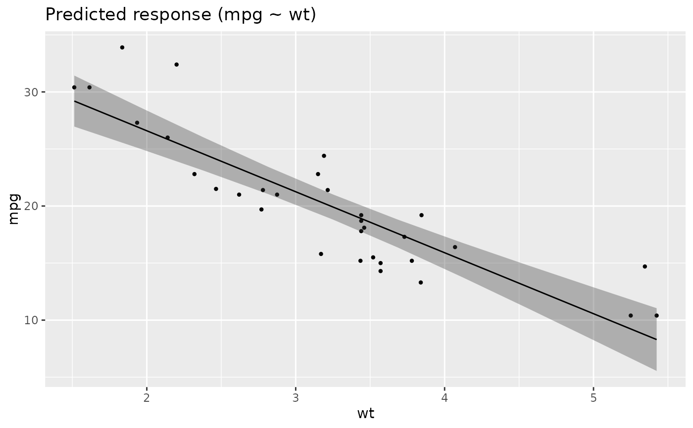

After fitting a model, it is useful generate model-based estimates of the response variables for different combinations of predictor values. Such estimates can be used to make inferences about relationships between variables, to make predictions about individual cases, or to compare the predicted values against the observed data.
The modelbased package includes 4 "related" functions, that mostly differ in
their default arguments (in particular, data and predict):
estimate_prediction(data = NULL, predict = "prediction", ...)estimate_expectation(data = NULL, predict = "expectation", ...)estimate_relation(data = "grid", predict = "expectation", ...)estimate_link(data = "grid", predict = "link", ...)
While they are all based on model-based predictions (using
insight::get_predicted()), they differ in terms of the type of
predictions they make by default. For instance, estimate_prediction() and
estimate_expectation() return predictions for the original data used to fit
the model, while estimate_relation() and estimate_link() return
predictions on a insight::get_datagrid(). Similarly, estimate_link
returns predictions on the link scale, while the others return predictions on
the response scale. Note that the relevance of these differences depends on
the model family (for instance, for linear models, estimate_relation is
equivalent to estimate_link(), since there is no difference between the
link-scale and the response scale).
Note that you can run plot() on
the output of these functions to get some visual insights (see the
plotting examples).
See the details section below for details about the different possibilities.
Usage
estimate_expectation(
model,
data = NULL,
by = NULL,
predict = "expectation",
ci = 0.95,
transform = NULL,
iterations = NULL,
keep_iterations = FALSE,
...
)
estimate_link(
model,
data = "grid",
by = NULL,
predict = "link",
ci = 0.95,
transform = NULL,
iterations = NULL,
keep_iterations = FALSE,
...
)
estimate_prediction(
model,
data = NULL,
by = NULL,
predict = "prediction",
ci = 0.95,
transform = NULL,
iterations = NULL,
keep_iterations = FALSE,
...
)
estimate_relation(
model,
data = "grid",
by = NULL,
predict = "expectation",
ci = 0.95,
transform = NULL,
iterations = NULL,
keep_iterations = FALSE,
...
)Arguments
- model
A statistical model.
- data
A data frame with model's predictors to estimate the response. If
NULL, the model's data is used. If"grid", the model matrix is obtained (throughinsight::get_datagrid()).- by
The predictor variable(s) at which to estimate the response. Other predictors of the model that are not included here will be set to their mean value (for numeric predictors), reference level (for factors) or mode (other types). The
byargument will be used to create a data grid viainsight::get_datagrid(), which will then be used asdataargument. Thus, you cannot specify bothdataandbybut only of these two arguments.- predict
This parameter controls what is predicted (and gets internally passed to
insight::get_predicted()). In most cases, you don't need to care about it: it is changed automatically according to the different predicting functions (i.e.,estimate_expectation(),estimate_prediction(),estimate_link()orestimate_relation()). The only time you might be interested in manually changing it is to estimate other distributional parameters (called "dpar" in other packages) - for instance when using complex formulae inbrmsmodels. Thepredictargument can then be set to the parameter you want to estimate, for instance"sigma","kappa", etc. Note that the distinction between"expectation","link"and"prediction"does not then apply (as you are directly predicting the value of some distributional parameter), and the corresponding functions will then only differ in the default value of theirdataargument.- ci
Confidence Interval (CI) level. Default to
0.95(95%).- transform
A function applied to predictions and confidence intervals to (back-) transform results, which can be useful in case the regression model has a transformed response variable (e.g.,
lm(log(y) ~ x)). Can also beTRUE, in which caseinsight::get_transformation()is called to determine the appropriate transformation-function. Note that no standard errors are returned when transformations are applied.- iterations
For Bayesian models, this corresponds to the number of posterior draws. If
NULL, will use all the draws (one for each iteration of the model). For frequentist models, if notNULL, will generate bootstrapped draws, from which bootstrapped CIs will be computed. Usekeep_iterationsto control if and how many draws will be included in the returned output (data frame), which can be used, for instance, for plotting.- keep_iterations
If
TRUE, will keep all iterations (draws) of bootstrapped or Bayesian models. They will be added as additional columns namediter_1,iter_2, and so on. Ifkeep_iterationsis a positive number, only as many columns as indicated inkeep_iterationswill be added to the output. You can reshape them to a long format by runningbayestestR::reshape_iterations().- ...
You can add all the additional control arguments from
insight::get_datagrid()(used whendata = "grid") andinsight::get_predicted(). Furthermore, for count regression models that use an offset term, useoffset = <value>to fix the offset at a specific value.
Value
A data frame of predicted values and uncertainty intervals, with
class "estimate_predicted". Methods for visualisation_recipe()
and plot() are available.
Note
These functions are built on top of insight::get_predicted() and correspond
to different specifications of its parameters. It may be useful to read its
documentation,
in particular the description of the predict argument for additional
details on the difference between expected vs. predicted values and link vs.
response scales.
Additional control parameters can be used to control results from
insight::get_datagrid() (when data = "grid") and from
insight::get_predicted() (the function used internally to compute
predictions).
For plotting, check the examples in visualisation_recipe(). Also check out
the Vignettes and README examples for
various examples, tutorials and usecases.
Expected (average) values
The most important way that various types of response estimates differ is in terms of what quantity is being estimated and the meaning of the uncertainty intervals. The major choices are expected values for uncertainty in the regression line and predicted values for uncertainty in the individual case predictions.
Expected values refer to the fitted regression line - the estimated average response value (i.e., the "expectation") for individuals with specific predictor values. For example, in a linear model y = 2 + 3x + 4z + e, the estimated average y for individuals with x = 1 and z = 2 is 11.
For expected values, uncertainty intervals refer to uncertainty in the estimated conditional average (where might the true regression line actually fall)? Uncertainty intervals for expected values are also called "confidence intervals".
Expected values and their uncertainty intervals are useful for describing the relationship between variables and for describing how precisely a model has been estimated.
For generalized linear models, expected values are reported on one of two scales:
The link scale refers to scale of the fitted regression line, after transformation by the link function. For example, for a logistic regression (logit binomial) model, the link scale gives expected log-odds. For a log-link Poisson model, the link scale gives the expected log-count.
The response scale refers to the original scale of the response variable (i.e., without any link function transformation). Expected values on the link scale are back-transformed to the original response variable metric (e.g., expected probabilities for binomial models, expected counts for Poisson models).
Individual case predictions
In contrast to expected values, predicted values refer to predictions for individual cases. Predicted values are also called "posterior predictions" or "posterior predictive draws".
For predicted values, uncertainty intervals refer to uncertainty in the individual response values for each case (where might any single case actually fall)? Uncertainty intervals for predicted values are also called "prediction intervals" or "posterior predictive intervals".
Predicted values and their uncertainty intervals are useful for forecasting the range of values that might be observed in new data, for making decisions about individual cases, and for checking if model predictions are reasonable ("posterior predictive checks").
Predicted values and intervals are always on the scale of the original response variable (not the link scale).
Functions for estimating predicted values and uncertainty
modelbased provides 4 functions for generating model-based response estimates and their uncertainty:
estimate_expectation():Generates expected values (conditional average) on the response scale.
The uncertainty interval is a confidence interval.
By default, values are computed using the data used to fit the model.
estimate_link():Generates expected values (conditional average) on the link scale.
The uncertainty interval is a confidence interval.
By default, values are computed using a reference grid spanning the observed range of predictor values (see
insight::get_datagrid()).
estimate_prediction():Generates predicted values (for individual cases) on the response scale.
The uncertainty interval is a prediction interval.
By default, values are computed using the data used to fit the model.
estimate_relation():Like
estimate_expectation().Useful for visualizing a model.
Generates expected values (conditional average) on the response scale.
The uncertainty interval is a confidence interval.
By default, values are computed using a reference grid spanning the observed range of predictor values (see
insight::get_datagrid()).
Data for predictions
If the data = NULL, values are estimated using the data used to fit the
model. If data = "grid", values are computed using a reference grid
spanning the observed range of predictor values with
insight::get_datagrid(). This can be useful for model visualization. The
number of predictor values used for each variable can be controlled with the
length argument. data can also be a data frame containing columns with
names matching the model frame (see insight::get_data()). This can be used
to generate model predictions for specific combinations of predictor values.
Finite mixture models
For finite mixture models (currently, only the brms::mixture() family
from package brms is supported), use predict = "classification" with
data = NULL to predict the class membership for each observation (e.g.,
estimate_prediction(model, predict = "classification")). To return
predicted values stratified by class membership, use predict = "link"
(possibly in combination with data or by, e.g.
estimate_link(model, by = "predictor")). Other predict options will
return predicted values of the outcome for the full data, not stratified by
class membership.
Examples
library(modelbased)
# Linear Models
model <- lm(mpg ~ wt, data = mtcars)
# Get predicted and prediction interval (see insight::get_predicted)
estimate_expectation(model)
#> Model-based Predictions
#>
#> wt | Predicted | SE | 95% CI | Residuals
#> ----------------------------------------------------
#> 2.62 | 23.28 | 0.63 | [21.99, 24.58] | -2.28
#> 2.88 | 21.92 | 0.57 | [20.75, 23.09] | -0.92
#> 2.32 | 24.89 | 0.74 | [23.38, 26.39] | -2.09
#> 3.21 | 20.10 | 0.54 | [19.00, 21.20] | 1.30
#> 3.44 | 18.90 | 0.55 | [17.77, 20.03] | -0.20
#> 3.46 | 18.79 | 0.56 | [17.66, 19.93] | -0.69
#> 3.57 | 18.21 | 0.57 | [17.03, 19.38] | -3.91
#> 3.19 | 20.24 | 0.54 | [19.14, 21.34] | 4.16
#> 3.15 | 20.45 | 0.54 | [19.35, 21.55] | 2.35
#> 3.44 | 18.90 | 0.55 | [17.77, 20.03] | 0.30
#> 3.44 | 18.90 | 0.55 | [17.77, 20.03] | -1.10
#> 4.07 | 15.53 | 0.72 | [14.06, 17.00] | 0.87
#> 3.73 | 17.35 | 0.61 | [16.10, 18.60] | -0.05
#> 3.78 | 17.08 | 0.62 | [15.81, 18.36] | -1.88
#> 5.25 | 9.23 | 1.26 | [ 6.66, 11.80] | 1.17
#> 5.42 | 8.30 | 1.35 | [ 5.55, 11.05] | 2.10
#> 5.34 | 8.72 | 1.31 | [ 6.05, 11.39] | 5.98
#> 2.20 | 25.53 | 0.78 | [23.93, 27.13] | 6.87
#> 1.61 | 28.65 | 1.05 | [26.52, 30.79] | 1.75
#> 1.83 | 27.48 | 0.94 | [25.55, 29.40] | 6.42
#> 2.46 | 24.11 | 0.68 | [22.72, 25.51] | -2.61
#> 3.52 | 18.47 | 0.56 | [17.32, 19.63] | -2.97
#> 3.44 | 18.93 | 0.55 | [17.80, 20.05] | -3.73
#> 3.84 | 16.76 | 0.64 | [15.45, 18.07] | -3.46
#> 3.85 | 16.74 | 0.64 | [15.42, 18.05] | 2.46
#> 1.94 | 26.94 | 0.90 | [25.11, 28.77] | 0.36
#> 2.14 | 25.85 | 0.81 | [24.20, 27.50] | 0.15
#> 1.51 | 29.20 | 1.09 | [26.96, 31.43] | 1.20
#> 3.17 | 20.34 | 0.54 | [19.24, 21.44] | -4.54
#> 2.77 | 22.48 | 0.59 | [21.27, 23.69] | -2.78
#> 3.57 | 18.21 | 0.57 | [17.03, 19.38] | -3.21
#> 2.78 | 22.43 | 0.59 | [21.22, 23.64] | -1.03
#>
#> Variable predicted: mpg
#>
# Get expected values with confidence interval
pred <- estimate_relation(model)
pred
#> Model-based Predictions
#>
#> wt | Predicted | SE | 95% CI
#> ----------------------------------------
#> 1.51 | 29.20 | 1.09 | [26.96, 31.43]
#> 1.95 | 26.87 | 0.89 | [25.05, 28.69]
#> 2.38 | 24.55 | 0.71 | [23.10, 26.01]
#> 2.82 | 22.23 | 0.58 | [21.04, 23.42]
#> 3.25 | 19.91 | 0.54 | [18.81, 21.01]
#> 3.69 | 17.59 | 0.60 | [16.36, 18.81]
#> 4.12 | 15.27 | 0.74 | [13.76, 16.77]
#> 4.55 | 12.94 | 0.92 | [11.06, 14.82]
#> 4.99 | 10.62 | 1.13 | [ 8.32, 12.92]
#> 5.42 | 8.30 | 1.35 | [ 5.55, 11.05]
#>
#> Variable predicted: mpg
#> Predictors modulated: wt
#>
# Visualisation (see visualisation_recipe())
plot(pred)

# Standardize predictions
pred <- estimate_relation(lm(mpg ~ wt + am, data = mtcars))
z <- standardize(pred, include_response = FALSE)
z
#> Model-based Predictions (standardized)
#>
#> wt | am | Predicted | SE | 95% CI
#> -------------------------------------------------
#> -1.74 | -0.81 | 29.22 | 1.91 | [25.31, 33.14]
#> -1.30 | -0.81 | 26.89 | 1.60 | [23.62, 30.17]
#> -0.85 | -0.81 | 24.57 | 1.30 | [21.90, 27.24]
#> -0.41 | -0.81 | 22.24 | 1.03 | [20.13, 24.36]
#> 0.03 | -0.81 | 19.92 | 0.82 | [18.24, 21.60]
#> 0.48 | -0.81 | 17.59 | 0.71 | [16.13, 19.05]
#> 0.92 | -0.81 | 15.27 | 0.76 | [13.71, 16.83]
#> 1.37 | -0.81 | 12.94 | 0.94 | [11.01, 14.87]
#> 1.81 | -0.81 | 10.62 | 1.20 | [ 8.17, 13.06]
#> 2.26 | -0.81 | 8.29 | 1.49 | [ 5.25, 11.33]
#> -1.74 | 1.19 | 29.20 | 1.11 | [26.92, 31.48]
#> -1.30 | 1.19 | 26.87 | 0.93 | [24.96, 28.78]
#> -0.85 | 1.19 | 24.55 | 0.86 | [22.79, 26.31]
#> -0.41 | 1.19 | 22.22 | 0.92 | [20.34, 24.09]
#> 0.03 | 1.19 | 19.90 | 1.08 | [17.68, 22.11]
#> 0.48 | 1.19 | 17.57 | 1.32 | [14.86, 20.27]
#> 0.92 | 1.19 | 15.24 | 1.60 | [11.98, 18.51]
#> 1.37 | 1.19 | 12.92 | 1.90 | [ 9.04, 16.79]
#> 1.81 | 1.19 | 10.59 | 2.21 | [ 6.08, 15.11]
#> 2.26 | 1.19 | 8.26 | 2.53 | [ 3.10, 13.43]
#>
#> Variable predicted: mpg
#> Predictors modulated: wt, am
#>
unstandardize(z, include_response = FALSE)
#> Model-based Predictions (standardized)
#>
#> wt | am | Predicted | SE | 95% CI
#> ---------------------------------------------
#> 1.51 | 0 | 29.22 | 1.91 | [25.31, 33.14]
#> 1.95 | 0 | 26.89 | 1.60 | [23.62, 30.17]
#> 2.38 | 0 | 24.57 | 1.30 | [21.90, 27.24]
#> 2.82 | 0 | 22.24 | 1.03 | [20.13, 24.36]
#> 3.25 | 0 | 19.92 | 0.82 | [18.24, 21.60]
#> 3.69 | 0 | 17.59 | 0.71 | [16.13, 19.05]
#> 4.12 | 0 | 15.27 | 0.76 | [13.71, 16.83]
#> 4.55 | 0 | 12.94 | 0.94 | [11.01, 14.87]
#> 4.99 | 0 | 10.62 | 1.20 | [ 8.17, 13.06]
#> 5.42 | 0 | 8.29 | 1.49 | [ 5.25, 11.33]
#> 1.51 | 1 | 29.20 | 1.11 | [26.92, 31.48]
#> 1.95 | 1 | 26.87 | 0.93 | [24.96, 28.78]
#> 2.38 | 1 | 24.55 | 0.86 | [22.79, 26.31]
#> 2.82 | 1 | 22.22 | 0.92 | [20.34, 24.09]
#> 3.25 | 1 | 19.90 | 1.08 | [17.68, 22.11]
#> 3.69 | 1 | 17.57 | 1.32 | [14.86, 20.27]
#> 4.12 | 1 | 15.24 | 1.60 | [11.98, 18.51]
#> 4.55 | 1 | 12.92 | 1.90 | [ 9.04, 16.79]
#> 4.99 | 1 | 10.59 | 2.21 | [ 6.08, 15.11]
#> 5.42 | 1 | 8.26 | 2.53 | [ 3.10, 13.43]
#>
#> Variable predicted: mpg
#> Predictors modulated: wt, am
#>
# Logistic Models
model <- glm(vs ~ wt, data = mtcars, family = "binomial")
estimate_expectation(model)
#> Model-based Predictions
#>
#> wt | Predicted | SE | 95% CI | Residuals
#> --------------------------------------------------
#> 2.62 | 0.67 | 0.12 | [0.40, 0.86] | -0.67
#> 2.88 | 0.56 | 0.12 | [0.33, 0.76] | -0.56
#> 2.32 | 0.78 | 0.12 | [0.47, 0.94] | 0.22
#> 3.21 | 0.39 | 0.11 | [0.21, 0.61] | 0.61
#> 3.44 | 0.30 | 0.11 | [0.14, 0.53] | -0.30
#> 3.46 | 0.29 | 0.10 | [0.13, 0.53] | 0.71
#> 3.57 | 0.25 | 0.10 | [0.10, 0.50] | -0.25
#> 3.19 | 0.41 | 0.11 | [0.22, 0.62] | 0.59
#> 3.15 | 0.42 | 0.11 | [0.24, 0.64] | 0.58
#> 3.44 | 0.30 | 0.11 | [0.14, 0.53] | 0.70
#> 3.44 | 0.30 | 0.11 | [0.14, 0.53] | 0.70
#> 4.07 | 0.11 | 0.08 | [0.02, 0.39] | -0.11
#> 3.73 | 0.20 | 0.10 | [0.07, 0.46] | -0.20
#> 3.78 | 0.18 | 0.10 | [0.06, 0.45] | -0.18
#> 5.25 | 0.01 | 0.02 | [0.00, 0.24] | -0.01
#> 5.42 | 9.49e-03 | 0.02 | [0.00, 0.23] | -9.49e-03
#> 5.34 | 0.01 | 0.02 | [0.00, 0.23] | -0.01
#> 2.20 | 0.82 | 0.12 | [0.49, 0.96] | 0.18
#> 1.61 | 0.93 | 0.07 | [0.58, 0.99] | 0.07
#> 1.83 | 0.90 | 0.09 | [0.55, 0.99] | 0.10
#> 2.46 | 0.73 | 0.13 | [0.44, 0.91] | 0.27
#> 3.52 | 0.27 | 0.10 | [0.11, 0.51] | -0.27
#> 3.44 | 0.30 | 0.11 | [0.14, 0.53] | -0.30
#> 3.84 | 0.16 | 0.10 | [0.05, 0.43] | -0.16
#> 3.85 | 0.16 | 0.10 | [0.05, 0.43] | -0.16
#> 1.94 | 0.88 | 0.10 | [0.54, 0.98] | 0.12
#> 2.14 | 0.84 | 0.11 | [0.50, 0.96] | -0.84
#> 1.51 | 0.94 | 0.07 | [0.60, 0.99] | 0.06
#> 3.17 | 0.42 | 0.11 | [0.23, 0.63] | -0.42
#> 2.77 | 0.60 | 0.12 | [0.36, 0.80] | -0.60
#> 3.57 | 0.25 | 0.10 | [0.10, 0.50] | -0.25
#> 2.78 | 0.60 | 0.12 | [0.36, 0.80] | 0.40
#>
#> Variable predicted: vs
#> Predictions are on the response-scale.
#>
estimate_relation(model)
#> Model-based Predictions
#>
#> wt | Predicted | SE | 95% CI
#> --------------------------------------
#> 1.51 | 0.94 | 0.07 | [0.60, 0.99]
#> 1.95 | 0.88 | 0.10 | [0.53, 0.98]
#> 2.38 | 0.76 | 0.12 | [0.46, 0.92]
#> 2.82 | 0.58 | 0.12 | [0.35, 0.78]
#> 3.25 | 0.38 | 0.11 | [0.20, 0.60]
#> 3.69 | 0.21 | 0.10 | [0.07, 0.47]
#> 4.12 | 0.10 | 0.08 | [0.02, 0.38]
#> 4.55 | 0.05 | 0.05 | [0.01, 0.32]
#> 4.99 | 0.02 | 0.03 | [0.00, 0.27]
#> 5.42 | 9.49e-03 | 0.02 | [0.00, 0.23]
#>
#> Variable predicted: vs
#> Predictors modulated: wt
#> Predictions are on the response-scale.
#>
# Mixed models
data(mtcars)
mtcars$gear <- as.factor(mtcars$gear)
model <- glmmTMB::glmmTMB(mpg ~ wt + (1 | gear), data = mtcars)
estimate_expectation(model)
#> Model-based Predictions
#>
#> wt | gear | Predicted | SE | 95% CI | Residuals
#> -----------------------------------------------------------
#> 2.62 | 4 | 23.64 | 1.08 | [21.53, 25.76] | -2.64
#> 2.88 | 4 | 22.32 | 1.13 | [20.11, 24.53] | -1.32
#> 2.32 | 4 | 25.20 | 1.05 | [23.14, 27.26] | -2.40
#> 3.21 | 3 | 19.87 | 0.81 | [18.28, 21.46] | 1.53
#> 3.44 | 3 | 18.70 | 0.75 | [17.23, 20.18] | -1.00e-03
#> 3.46 | 3 | 18.60 | 0.75 | [17.13, 20.06] | -0.50
#> 3.57 | 3 | 18.03 | 0.73 | [16.60, 19.46] | -3.73
#> 3.19 | 4 | 20.68 | 1.22 | [18.29, 23.08] | 3.72
#> 3.15 | 4 | 20.89 | 1.21 | [18.52, 23.26] | 1.91
#> 3.44 | 4 | 19.39 | 1.32 | [16.80, 21.97] | -0.19
#> 3.44 | 4 | 19.39 | 1.32 | [16.80, 21.97] | -1.59
#> 4.07 | 3 | 15.43 | 0.74 | [13.98, 16.88] | 0.97
#> 3.73 | 3 | 17.19 | 0.72 | [15.79, 18.60] | 0.11
#> 3.78 | 3 | 16.94 | 0.71 | [15.54, 18.34] | -1.74
#> 5.25 | 3 | 9.30 | 1.21 | [ 6.93, 11.67] | 1.10
#> 5.42 | 3 | 8.40 | 1.30 | [ 5.84, 10.95] | 2.00
#> 5.34 | 3 | 8.81 | 1.26 | [ 6.34, 11.28] | 5.89
#> 2.20 | 4 | 25.83 | 1.05 | [23.77, 27.88] | 6.57
#> 1.61 | 4 | 28.86 | 1.13 | [26.64, 31.08] | 1.54
#> 1.83 | 4 | 27.72 | 1.09 | [25.59, 29.85] | 6.18
#> 2.46 | 3 | 23.76 | 1.14 | [21.53, 26.00] | -2.26
#> 3.52 | 3 | 18.29 | 0.74 | [16.84, 19.73] | -2.79
#> 3.44 | 3 | 18.73 | 0.75 | [17.25, 20.20] | -3.53
#> 3.84 | 3 | 16.62 | 0.71 | [15.22, 18.02] | -3.32
#> 3.85 | 3 | 16.60 | 0.72 | [15.20, 18.00] | 2.60
#> 1.94 | 4 | 27.20 | 1.07 | [25.10, 29.30] | 0.10
#> 2.14 | 5 | 25.30 | 1.61 | [22.15, 28.45] | 0.70
#> 1.51 | 5 | 28.56 | 1.92 | [24.78, 32.33] | 1.84
#> 3.17 | 5 | 19.95 | 1.24 | [17.53, 22.37] | -4.15
#> 2.77 | 5 | 22.03 | 1.35 | [19.38, 24.68] | -2.33
#> 3.57 | 5 | 17.87 | 1.17 | [15.58, 20.17] | -2.87
#> 2.78 | 4 | 22.81 | 1.11 | [20.64, 24.98] | -1.41
#>
#> Variable predicted: mpg
#>
estimate_relation(model)
#> Model-based Predictions
#>
#> wt | Predicted | SE | CI
#> ----------------------------------------
#> 1.51 | 28.89 | 1.35 | [26.23, 31.54]
#> 1.95 | 26.63 | 1.11 | [24.45, 28.80]
#> 2.38 | 24.37 | 0.89 | [22.63, 26.12]
#> 2.82 | 22.11 | 0.73 | [20.69, 23.54]
#> 3.25 | 19.86 | 0.66 | [18.57, 21.15]
#> 3.69 | 17.60 | 0.71 | [16.21, 18.99]
#> 4.12 | 15.35 | 0.86 | [13.66, 17.04]
#> 4.55 | 13.09 | 1.07 | [10.98, 15.19]
#> 4.99 | 10.83 | 1.32 | [ 8.26, 13.41]
#> 5.42 | 8.57 | 1.57 | [ 5.49, 11.66]
#>
#> Variable predicted: mpg
#> Predictors modulated: wt
#>
# Predict random effects and calculate contrasts
estim <- estimate_relation(model, by = "gear")
estim
#> Model-based Predictions
#>
#> gear | Predicted | SE | 95% CI
#> ----------------------------------------
#> 3 | 19.86 | 0.81 | [18.27, 21.45]
#> 4 | 20.54 | 1.23 | [18.13, 22.96]
#> 5 | 19.71 | 1.22 | [17.30, 22.11]
#>
#> Variable predicted: mpg
#> Predictors modulated: gear
#> Predictors controlled: wt (3.2)
#>
estimate_contrasts(estim)
#> Model-based Contrasts Analysis
#>
#> Level1 | Level2 | Difference | SE | 95% CI | Statistic | p
#> -----------------------------------------------------------------------
#> 3 | 4 | -0.68 | 1.48 | [-3.58, 2.21] | -0.46 | 0.643
#> 3 | 5 | 0.15 | 1.47 | [-2.73, 3.03] | 0.10 | 0.917
#> 4 | 5 | 0.84 | 1.74 | [-2.57, 4.24] | 0.48 | 0.630
#>
#> Variable predicted: mpg
#> Predictors contrasted: gear
#> Predictors averaged: wt (3.2)
#>
# Bayesian models
# \donttest{
model <- suppressWarnings(rstanarm::stan_glm(
mpg ~ wt,
data = mtcars, refresh = 0, iter = 200
))
estimate_expectation(model)
#> Model-based Predictions
#>
#> wt | Predicted | SE | 95% CI | Residuals
#> ----------------------------------------------------
#> 2.62 | 23.12 | 0.62 | [21.85, 24.24] | -2.12
#> 2.88 | 21.78 | 0.55 | [20.72, 22.78] | -0.78
#> 2.32 | 24.70 | 0.74 | [23.16, 25.98] | -1.90
#> 3.21 | 19.99 | 0.51 | [19.10, 20.91] | 1.41
#> 3.44 | 18.80 | 0.53 | [17.82, 19.78] | -0.10
#> 3.46 | 18.70 | 0.53 | [17.70, 19.68] | -0.60
#> 3.57 | 18.12 | 0.55 | [17.06, 19.19] | -3.82
#> 3.19 | 20.12 | 0.51 | [19.24, 21.04] | 4.28
#> 3.15 | 20.33 | 0.52 | [19.44, 21.26] | 2.47
#> 3.44 | 18.80 | 0.53 | [17.82, 19.78] | 0.40
#> 3.44 | 18.80 | 0.53 | [17.82, 19.78] | -1.00
#> 4.07 | 15.48 | 0.72 | [14.08, 16.91] | 0.92
#> 3.73 | 17.27 | 0.59 | [16.12, 18.42] | 0.03
#> 3.78 | 17.01 | 0.61 | [15.81, 18.19] | -1.81
#> 5.25 | 9.27 | 1.30 | [ 6.80, 11.85] | 1.13
#> 5.42 | 8.35 | 1.39 | [ 5.69, 11.14] | 2.05
#> 5.34 | 8.77 | 1.35 | [ 6.19, 11.48] | 5.93
#> 2.20 | 25.34 | 0.79 | [23.64, 26.71] | 7.06
#> 1.61 | 28.42 | 1.07 | [26.12, 30.36] | 1.98
#> 1.83 | 27.26 | 0.96 | [25.18, 28.99] | 6.64
#> 2.46 | 23.94 | 0.68 | [22.52, 25.14] | -2.44
#> 3.52 | 18.38 | 0.54 | [17.35, 19.41] | -2.88
#> 3.44 | 18.83 | 0.53 | [17.85, 19.81] | -3.63
#> 3.84 | 16.70 | 0.63 | [15.46, 17.91] | -3.40
#> 3.85 | 16.67 | 0.63 | [15.43, 17.89] | 2.53
#> 1.94 | 26.73 | 0.91 | [24.75, 28.41] | 0.57
#> 2.14 | 25.65 | 0.82 | [23.87, 27.10] | 0.35
#> 1.51 | 28.96 | 1.13 | [26.56, 30.97] | 1.44
#> 3.17 | 20.23 | 0.52 | [19.33, 21.14] | -4.43
#> 2.77 | 22.33 | 0.58 | [21.24, 23.38] | -2.63
#> 3.57 | 18.12 | 0.55 | [17.06, 19.19] | -3.12
#> 2.78 | 22.28 | 0.58 | [21.20, 23.32] | -0.88
#>
#> Variable predicted: mpg
#>
estimate_relation(model)
#> Model-based Predictions
#>
#> wt | Predicted | SE | 95% CI
#> ----------------------------------------
#> 1.51 | 28.96 | 1.13 | [26.56, 30.97]
#> 1.95 | 26.66 | 0.91 | [24.69, 28.33]
#> 2.38 | 24.38 | 0.71 | [22.87, 25.62]
#> 2.82 | 22.09 | 0.57 | [21.01, 23.11]
#> 3.25 | 19.80 | 0.51 | [18.89, 20.71]
#> 3.69 | 17.51 | 0.58 | [16.38, 18.62]
#> 4.12 | 15.22 | 0.74 | [13.78, 16.69]
#> 4.55 | 12.93 | 0.94 | [11.12, 14.76]
#> 4.99 | 10.64 | 1.16 | [ 8.44, 12.90]
#> 5.42 | 8.35 | 1.39 | [ 5.69, 11.14]
#>
#> Variable predicted: mpg
#> Predictors modulated: wt
#>
# }